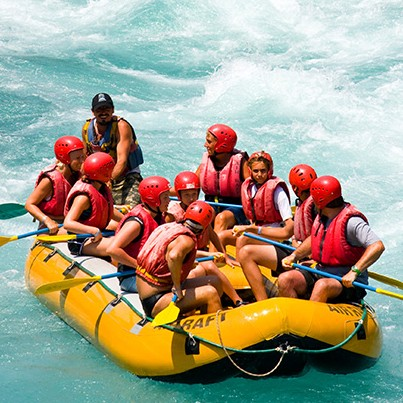
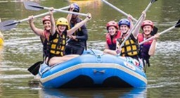

Fun park where people can rafting and enjoy with family and friends. There many zones of different speed water where visitors can go to raft



Fun park where people can rafting and enjoy with family and friends. There many zones of different speed water where visitors can go to raft
Often referred to as Rafting Aventure, this facility is located in Parana River in Argentina. Concept: It functions as a dedicated "park" for water sports, offering rafting on the Parana River. Amenities: The site includes an outdoor sports bar, hotel accommodations, and organized groups for descent, making it a comprehensive destination for rafting tourism in the flag monument. Activities: In addition to rafting, it often facilitates canoeing, swimming and being in hot springs in areas where the river is calmer